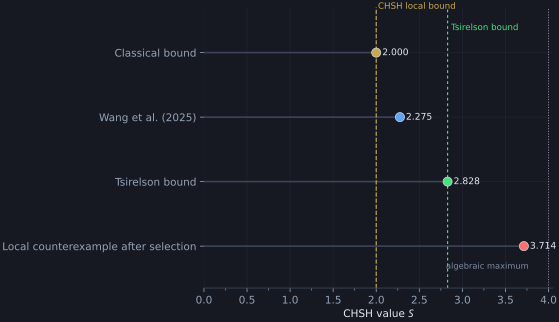
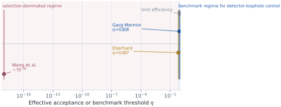
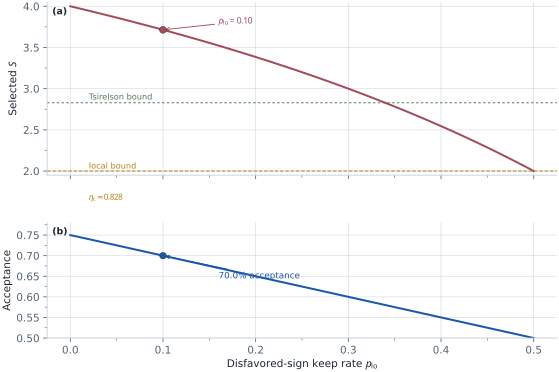
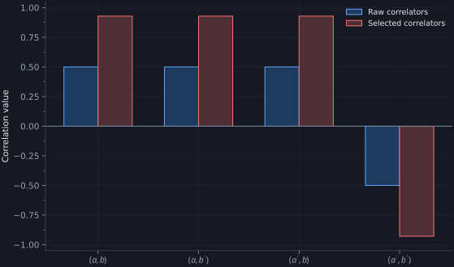

Formal Paper
Bell Violations Without Entanglement?
A Reproducible Rebuttal of Wang et al. (2025)
Claim: in the ultra-low-efficiency regime, a post-selected CHSH value above 2 is non-exclusionary evidence until the selection rule itself is constrained.
- The Monte Carlo benchmark remains S = 3.716 (95% CI [3.714, 3.717]) at 70.0% acceptance for a purely local source.
- The selected estimator is a conditional expectation on accepted events, so the naive S ≤ 2 inference survives only under fair-sampling assumptions.
- At Wang et al.’s reported effective acceptance of ~10−18, diagnostics of the selection rule are more informative than the scalar statistic alone.
Abstract
A recent Science Advances paper reports S = 2.275 ± 0.057 at an effective acceptance or post-selection probability of roughly 10−18 and interprets that statistic as Bell-inequality violation without entanglement [17]. The present paper makes a narrower claim, even though three published critiques now converge on the stronger diagnosis that the reported violation is generated by fourfold post-selection and unconventional normalization rather than by a loophole-free demonstration of nonlocality [18] [19] [20]. In such a severely filtered regime, the scalar fact S > 2 is not exclusionary evidence against local models unless the selection mechanism is independently constrained. We formalize this point in three steps. First, we write the selected estimator as a conditional expectation on accepted events and identify fair sampling as the assumption that transfers the classical CHSH bound from the emitted ensemble to the retained one. Second, we construct a deterministic local hidden-variable model with an outcome-coupled acceptance rule and derive the exact analytic toy-model expectations Esel = ±13/14 and Ssel = 26/7 ≈ 3.714. Third, we compare those exact expectations with the site’s Monte Carlo benchmark, which yields S = 3.716 (95% CI [3.714, 3.717]) at 70.0% acceptance, and with the Wang et al. report. The evidentiary consequence is limited but decisive: in an ultra-low-efficiency Bell test, a post-selected CHSH value above 2 is suggestive at most until raw correlations, setting-resolved acceptance rates, and fair-sampling diagnostics are reported.
Introduction
Bell’s theorem excludes local hidden-variable explanations for the full set of quantum correlations under the usual assumptions of locality, realism, and setting independence [1]. The Clauser-Horne-Shimony-Holt inequality packages that exclusion into an experimentally testable scalar, and Fine sharpened the probabilistic picture by relating CHSH satisfaction to the existence of a joint distribution over the counterfactual outcomes [2] [7].
In the fair-sampling regime, the local bound is S ≤ 2 and the quantum ceiling is the Tsirelson bound 2√2 [10]. Wang et al. report a super-classical value from a multiphoton path-identity interference experiment and interpret it as Bell-inequality violation without entanglement [17].
The experiment-specific structure matters. Wang et al. use four-photon frustrated interference, or interwoven frustrated down-conversion, and retain only fourfold coincidences. Alice and Bob control local phases α and β, the missing outcome is inferred by a π-shift of the local phase, and the reported joint probability is reconstructed from counts gathered at four different settings rather than from a single local trial with definite outcomes.
That normalization is operationally different from a standard Bell test, where each chosen setting yields a local ±1 outcome without counterfactual renormalization. The quoted 10−18 figure is therefore better read as an effective acceptance rate for the selected fourfold subensemble than as an ordinary per-arm detector efficiency. Wang et al. are also explicit that the locality loophole and sampling loophole remain open and that the analysis relies on fair sampling [17].
The apparatus is sophisticated. The relevant issue is whether a post-selected statistic in an ultra-low-efficiency regime can support the inference being drawn from it.
This paper answers that question with a constructive counterexample and a narrower evidentiary standard. A large CHSH number can be compelling, but by itself it is not a loophole closure criterion.
| Cluster | What it establishes | Why it matters here |
|---|---|---|
| Bell 1964; CHSH 1969 [1][2] | Local hidden-variable models satisfy a bound on the full correlation structure. | The theorem targets the emitted ensemble, not an arbitrary filtered subset. |
| Pearle through Eberhard [3][4][5][6] | Selection and efficiency can open a detection loophole unless explicitly controlled. | Wang et al. operate far inside the regime where that warning is operationally important. |
| Path identity optics [11][12][13] | Indistinguishable generation pathways can create striking interference effects. | The optical novelty is not being denied; the Bell inference is the narrower issue. |
| Loophole-aware Bell benchmarks [14][15][16] | Strong Bell claims are paired with explicit closure strategies, not just large S. | That is the comparison class for any foundational headline. |
| 2025–26 critique literature [18][19][20] | Three independent critiques converge on fourfold post-selection, unconventional normalization, and setting semantics as the key interpretive issues. | The stronger artifact diagnosis in the literature goes beyond the narrower evidentiary claim made here. |
The published critiques sharpen the experiment-specific diagnosis in complementary ways. Wharton and Price construct a local classical model and frame the selection effect as collider or Berkson bias. Wójcik and Wójcik argue that post-selection plus the cross-setting normalization creates Bell-like numbers without Bell-operational meaning, and that the phases act more like source-intensity controls than local dichotomic settings. Cieśliński, Larsson, Markiewicz, Schlichtholz, and Żukowski show that the phase-shift protocol admits a local realistic model, while a different on-off switching protocol can still reveal genuine Bell nonclassicality from the same interferometric family.

Theoretical Background
Notation and Assumptions
We write Alice’s setting as x ∈ {0,1} and Bob’s as y ∈ {0,1}. Outcomes are binary: Ax, By ∈ {-1,+1}. A hidden variable is denoted by λ, and D ∈ {0,1} marks whether a trial is retained by the analysis filter.
Locality
Ax(λ) depends on x and λ, not on y; symmetrically for Bob.
Realism
All four counterfactual outcomes are taken to exist simultaneously for the local model under study.
Freedom
P(λ|x,y) = P(λ), so the settings are statistically independent of the hidden variable.
Fair Sampling
The standard CHSH inference on selected data additionally requires D not to depend on the hidden outcome pattern in a biasing way.
Definition
CHSH Functional and Sign Convention
In the convention used throughout this paper, the CHSH functional is
Relabeling settings or flipping one party’s output signs maps this expression to the other familiar CHSH sign placements without changing the attainable classical or quantum bounds. The notation changes; the admissible region does not.
Proposition 1
Fair-Sampling Local Bound
For any local hidden-variable model satisfying locality, realism, freedom, and fair sampling, the selected CHSH statistic obeys
Proof Sketch
For each fixed λ, define \(X(\lambda) = A_0(\lambda)[B_0(\lambda) + B_1(\lambda)] + A_1(\lambda)[B_0(\lambda) - B_1(\lambda)]\). Because Bob’s outcomes are each ±1, exactly one bracket has magnitude 2 and the other vanishes, so |X(λ)| ≤ 2. Integrating over λ preserves the bound. If the accepted sample is a fair image of the emitted ensemble, the same algebra applies to the retained data as well [1] [2] [7].
Proposition 2
Quantum Comparison Ceiling
Within quantum mechanics, the maximal CHSH value is the Tsirelson bound
Proof Sketch
Let A, A' and B, B' be Hermitian observables with eigenvalues ±1, and define the CHSH operator \(\hat{S} = A \otimes (B + B') + A' \otimes (B - B')\). The standard commutator calculation gives \(\hat{S}^2 = 4I - [A,A'] \otimes [B,B']\), from which \(\|\hat{S}^2\| \leq 8\) and therefore \(\|\hat{S}\| \leq 2\sqrt{2}\). That ceiling is achievable for suitable entangled states and local observables [10].
Proposition 3
Selection Replaces the Unconditional Estimator
Once analysis is conditioned on accepted trials, the operational correlation is not Exy but
Proof Sketch
The indicator D selects a conditional ensemble. If D is independent of the hidden outcome pattern given the settings, then the selected estimator agrees with the raw one and the usual CHSH reasoning transfers. If D depends on outcomes or on a setting-outcome interaction, the estimator has changed, and the unqualified inference from S > 2 to nonlocality has changed with it [3] [4] [9].
That conditionalization issue is the detection loophole in statistical clothing. Pearle, Clauser-Horne, Garg-Mermin, Eberhard, and later reviews all stress that low-efficiency Bell tests need more than a selected scalar summary [3] [6] [4] [5] [9]. A useful CHSH benchmark for post-selected local models is
which we use throughout this paper as the working CHSH benchmark. Appendix A states the scope caveat explicitly: the expression is informative for CHSH-style post-selected analysis, not a universal replacement for every loophole discussion ever written.

Proposition 4
Constructive Inflation by Outcome-Coupled Acceptance
Let d00 = d01 = d10 = +1 and d11 = -1. If a trial with setting pair (x,y) is kept with probability phi when AxBy = dxy and with probability plo otherwise, then
For the deterministic model used here, the raw correlations are E00 = E01 = E10 = 1/2 and E11 = -1/2. Setting phi = 0.9 and plo = 0.1 yields the exact toy-model expectations Exy(sel) = dxy · 13/14 and therefore Ssel = 26/7 ≈ 3.714.
Proof Sketch
Write qxy = P(AxBy = dxy | x,y). Then \(q_{xy} = (1 + d_{xy}E_{xy})/2\), the acceptance rate is \(\eta_{xy} = p_{\mathrm{hi}}q_{xy} + p_{\mathrm{lo}}(1 - q_{xy})\), and the selected correlation is \(d_{xy}[p_{\mathrm{hi}}q_{xy} - p_{\mathrm{lo}}(1 - q_{xy})] / \eta_{xy}\). Appendix B expands the algebra. The important structural fact is plain: once the filter rewards the sign pattern that maximizes the CHSH combination, the statistic follows the filter.
The broader review literature on Bell nonlocality places the present argument in context. Bell inequalities are exact consequences of structural assumptions [8]. Experimental Bell claims therefore require not only a large statistic but also an explicit analysis of the assumptions under which that statistic is meaningful.
Methods
Deterministic Local Source
The paper’s Monte Carlo benchmark uses the reference-model workflow from the companion simulator repository. A hidden variable λ is drawn uniformly on [0, 2π), and the outcomes are deterministic thresholded cosines:
The chosen CHSH settings are (a0, a1, b0, b1) = (0, π/2, π/4, -π/4). For this deterministic sign model, those angles give the exact raw expectations
The Monte Carlo therefore verifies a simple local baseline rather than searching for one. This is appropriate because the argument requires an explicit counterexample, not an optimized model.
Outcome-Coupled Acceptance Rule
The filter uses the sign pattern that maximizes the chosen CHSH combination: d00 = d01 = d10 = +1 and d11 = -1. For each trial, define an acceptance indicator D by
with phi = 0.9 and plo = 0.1. The filter is local in the sense that it is applied after outcomes have been generated from a local source, but it is not fair: it depends directly on the outcome pattern and indirectly on the setting pair through dxy.
| Parameter | Value | Role |
|---|---|---|
| Hidden variable | λ ~ Unif[0, 2π) | Provides an isotropic local source with deterministic outcomes. |
| CHSH settings | (0, π/2, π/4, -π/4) | Produces the exact raw sign pattern (+1/2,+1/2,+1/2,-1/2). |
| Runs | 20 independent runs | Supports a run-level confidence interval for the aggregate Monte Carlo result. |
| Trials per run | 50,000 | Samples settings uniformly across the four CHSH pairs. |
| Selection parameters | phi = 0.9, plo = 0.1 | Rewards the CHSH-favored sign pattern and penalizes its complement. |
| Interval estimate | 95% t-interval over runs | Summarizes Monte Carlo variability of the aggregate result row. |
Reproducibility Protocol
- Sample a setting pair (x,y) uniformly from the four CHSH combinations.
- Sample λ uniformly on [0,2π) and compute Ax(λ), By(λ).
- Record the raw product AxBy and the target sign dxy.
- Accept the trial with probability phi when AxBy = dxy, else with probability plo.
- Estimate both raw and selected correlations by setting pair, then assemble the CHSH statistic from those four entries.
- Repeat for 20 runs and report the mean, run-level spread, and 95% t-interval.
Results
Aggregate Monte Carlo Result
The Monte Carlo rebuttal retains the project’s published aggregate result: without post-selection, the local model remains at S = 2.001 (95% CI [1.998, 2.004]) with 100% acceptance, while the same source under outcome-coupled acceptance yields S = 3.716 (95% CI [3.714, 3.717]) at 70.0% acceptance. The comparison matters because a local filter already reaches the evidentiary class being interpreted as nonlocal.
| Dataset | CHSH S | Acceptance / Benchmark Rate | Interpretation |
|---|---|---|---|
| Classical model, no selection | 2.001 ± 0.009 | 100% | Respects the local CHSH bound, as a fair local sample should. |
| Classical model, post-selected | 3.716 ± 0.004 | 70.0% | Selected statistic exceeds both the classical and Tsirelson bounds. |
| Wang et al. (2025) | 2.275 ± 0.057 | ~10−18 effective acceptance | Lives deep inside a regime where local post-selection remains available. |
Setting-Pair Decomposition of the Toy Filter
The analytic toy model makes the inflation mechanism numerically transparent. Starting from the exact raw correlations (+1/2,+1/2,+1/2,-1/2), the acceptance rule with phi = 0.9 and plo = 0.1 yields the exact selected correlations (±13/14) and a uniform pairwise acceptance rate of 0.7.
| Setting pair | Favored sign dxy | Raw Exy | Selected Exy(sel) | Acceptance ηxy |
|---|---|---|---|---|
| (a,b) | +1 | 1/2 = 0.500 | 13/14 = 0.929 | 7/10 = 0.700 |
| (a,b') | +1 | 1/2 = 0.500 | 13/14 = 0.929 | 7/10 = 0.700 |
| (a',b) | +1 | 1/2 = 0.500 | 13/14 = 0.929 | 7/10 = 0.700 |
| (a',b') | -1 | -1/2 = -0.500 | -13/14 = -0.929 | 7/10 = 0.700 |
Summing the exact selected entries gives Ssel = 13/14 + 13/14 + 13/14 - (-13/14) = 26/7 ≈ 3.714, which is fully consistent with the Monte Carlo result row. The analytic toy filter and the numerical rebuttal reach the same conclusion through different formulations.


Non-Diagnostic Status of the Wang et al. Statistic
Wang et al. report a smaller value than the benchmark above, but that comparison is incidental. The decisive fact is that once the accepted sample is permitted to drift away from the emitted ensemble, local models can already populate the reported regime. At an effective retained-event rate of 10−18 — used here only as a CHSH-style benchmark proxy η — the working bound \(S_{\mathrm{LHV,bench}}(\eta) = 4/\eta - 2\) is astronomically above 2.275. In that setting, a super-classical selected value is not yet a proof of nonlocality; it is a prompt to inspect the conditioning.
Discussion
What the Model Proves
A deterministic local source paired with an outcome-coupled acceptance rule can generate a selected CHSH value above both 2 and the Tsirelson bound. A selected scalar alone therefore does not certify nonlocality in a regime where such filters remain experimentally admissible. The conclusion is conditional, but the relevant condition is the one under dispute in the Wang et al. interpretation.
What the Model Does Not Prove
It does not prove that Wang et al.’s apparatus is classical. It does not deny that a quantum description of the apparatus may be appropriate — the path-identity interference mechanism they exploit is real and interesting in its own right [11][12][13]. It does not claim that \(4/\eta - 2\) is the last word on every Bell inequality or every experimental design. It shows only that the reported evidence does not yet force the nonlocal interpretation, a conclusion that is also supported by the immediate postpublication response literature [18] [19] [20].
What the Published Critiques Add
The critique literature goes further than the present formal thesis. Wharton and Price reproduce the geometry with a fully local classical model and interpret the acceptance rule as a collider-bias mechanism. Wójcik and Wójcik trace the apparent nonlocality to post-selection plus the unconventional normalization, arguing that the phases do not play the operational role of standard Bell settings. Cieśliński and coauthors prove that when the local phases are treated as the settings, the observed interference admits a local realistic model, even though a different on-off protocol can still reveal genuine Bell nonclassicality in the same optical platform.
This paper adopts that convergence as context while keeping the thesis narrower. A local counterexample already suffices to show that the reported evidence is not yet exclusive. That narrower stance is also consistent with Wang et al.’s own caveats: the locality loophole remains open, the sampling loophole remains open, and the interpretation relies on fair sampling [17].
What Would Weaken This Rebuttal
The rebuttal would lose force if Wang et al. supplied diagnostics that make the relevant local-selection mechanism implausible. In practical terms, that means setting-pair-resolved acceptance rates, raw pre-selection correlations, no-signaling checks on both raw and selected data, and explicit tests showing that acceptance is not correlated with the hidden outcome structure or with the measurement context. If the selected sample can be shown to be fair, this paper’s central objection recedes accordingly.
The benchmark for persuasive Bell evidence is set by the loophole-free tests of 2015. Hensen et al. used an event-ready architecture, while Giustina et al. and Shalm et al. used entangled-photon tests analyzed with CH/Eberhard-style logic rather than a bare CHSH threshold. All three paired suitable efficiencies with locality protections and explicit diagnostics rather than relying on a single post-selected number [14] [15] [16].
| Diagnostic | Why it matters |
|---|---|
| Raw correlations before selection | Shows whether the effect exists prior to the filtering step. |
| Acceptance rate by setting pair | Tests whether retention is coupled to measurement context. |
| No-signaling checks on raw and selected data | Detects filter-induced distortions in the observed marginals. |
| Independence tests for acceptance vs. outcomes/settings | Directly probes the fair-sampling assumption instead of merely hoping for it. |
| Sensitivity analysis for plausible filter bias | Quantifies how much apparent violation could be manufactured by asymmetric retention. |
Inference Discipline
A Bell test is an inference pipeline, not a single scalar. When efficiency is so low that the accepted sample may comprise nearly all observable events, the burden shifts to showing that the observed boundary crossing is attributable to physics rather than to conditioning. Recent work on the physical significance of Bell non-locality underscores that broader debate [21], but that debate begins only after the estimator itself has been disciplined.
Conclusion
A local hidden-variable source with outcome-coupled acceptance reproduces the evidentiary regime of a post-selected Bell claim and can exceed the Tsirelson bound without entanglement. In that setting, the Wang et al. statistic does not by itself establish quantum nonlocality.
The published critique literature now goes further and largely attributes the reported violation to fourfold post-selection and unconventional normalization. This paper treats that stronger diagnosis as context while retaining the narrower evidentiary thesis.
The remedy is methodological: report the raw correlations, the setting-resolved acceptance structure, and the diagnostics that constrain fair sampling. Until then, the appropriate interpretation of a low-efficiency post-selected violation is evidentiary caution.
Appendix
Appendix A. Detection Benchmark and Threshold
The working benchmark used in this paper is
Setting that benchmark equal to the quantum ceiling yields the familiar CHSH threshold:
This threshold is the standard reference point for CHSH-style fair-sampling discussions, consistent with the Pearle, Clauser-Horne, Garg-Mermin, and Eberhard literature [3] [6] [4] [5]. It is not universal across every Bell inequality variant: Clauser-Horne and Eberhard-type analyses can shift the efficiency discussion, especially for non-maximally entangled states. In this paper, η is being used as a compact CHSH benchmark parameter for the retained-sample rate, because Wang et al. frame their claim as a CHSH-style Bell violation even though their experimental rate is better described as effective acceptance than as ordinary detector efficiency.
Appendix B. Derivation of the Toy Post-Selection Estimator
Fix a setting pair (x,y) and favored sign dxy ∈ {-1,+1}. Let qxy = P(AxBy = dxy | x,y). Then
because Exy = P(AB=+1|x,y) - P(AB=-1|x,y). Under the acceptance rule phi for favored outcomes and plo otherwise, the pairwise acceptance rate is
and the selected correlation is
Substituting the exact raw values E00 = E01 = E10 = 1/2, E11 = -1/2, and (phi,plo) = (0.9,0.1) gives
Hence Ssel = 26/7 ≈ 3.714. More generally, whenever the filter rewards the sign pattern aligned with the chosen CHSH combination, the statistic inherits the filter’s preferences.
Appendix C. Sign Conventions and Notation Glossary
| Symbol | Meaning |
|---|---|
| x,y | Alice/Bob setting labels in {0,1}. |
| Ax, By | Binary outcomes taking values ±1. |
| λ | Hidden variable sampled from a uniform local source. |
| D | Acceptance indicator for whether a trial is retained. |
| Exy | Raw correlation \(\mathbb{E}[A_x B_y \mid x,y]\). |
| Exy(sel) | Selected correlation conditioned on D = 1. |
| dxy | Favored product sign for the CHSH-maximizing filter. |
| \(S = |E_{00} + E_{01} + E_{10} - E_{11}|\) | The CHSH sign convention used throughout; other conventions are equivalent up to relabeling. |
References
- J. S. Bell, “On the Einstein Podolsky Rosen paradox,” Physics Physique Fizika 1, 195–200 (1964). https://doi.org/10.1103/PhysicsPhysiqueFizika.1.195
- J. F. Clauser, M. A. Horne, A. Shimony, and R. A. Holt, “Proposed experiment to test local hidden-variable theories,” Physical Review Letters 23, 880–884 (1969). https://doi.org/10.1103/PhysRevLett.23.880
- P. M. Pearle, “Hidden-variable example based upon data rejection,” Physical Review D 2, 1418–1425 (1970). https://doi.org/10.1103/PhysRevD.2.1418
- J. F. Clauser and M. A. Horne, “Experimental consequences of objective local theories,” Physical Review D 10, 526–535 (1974). https://doi.org/10.1103/PhysRevD.10.526
- A. Garg and N. D. Mermin, “Detector inefficiencies in the Einstein-Podolsky-Rosen experiment,” Physical Review D 35, 3831–3835 (1987). https://doi.org/10.1103/PhysRevD.35.3831
- P. H. Eberhard, “Background level and counter efficiencies required for a loophole-free Einstein-Podolsky-Rosen experiment,” Physical Review A 47, R747–R750 (1993). https://doi.org/10.1103/PhysRevA.47.R747
- A. Fine, “Hidden Variables, Joint Probability, and the Bell Inequalities,” Physical Review Letters 48, 291–295 (1982). https://doi.org/10.1103/PhysRevLett.48.291
- N. Brunner, D. Cavalcanti, S. Pironio, V. Scarani, and S. Wehner, “Bell nonlocality,” Reviews of Modern Physics 86, 419–478 (2014). https://doi.org/10.1103/RevModPhys.86.419
- J.-Å. Larsson, “Loopholes in Bell inequality tests of local realism,” Journal of Physics A 47, 424003 (2014). https://doi.org/10.1088/1751-8113/47/42/424003
- B. S. Tsirelson, “Quantum generalizations of Bell’s inequality,” Letters in Mathematical Physics 4, 93–98 (1980). https://doi.org/10.1007/BF00417500
- X. Y. Zou, L. J. Wang, and L. Mandel, “Induced coherence and indistinguishability in optical interference,” Physical Review Letters 67, 318–321 (1991). https://doi.org/10.1103/PhysRevLett.67.318
- M. Krenn, M. Malik, T. Scheidl, R. Ursin, and A. Zeilinger, “Entanglement by path identity,” Physical Review Letters 118, 080401 (2017). https://doi.org/10.1103/PhysRevLett.118.080401
- A. Hochrainer, M. Lahiri, and A. Zeilinger, “Quantum indistinguishability by path identity and with undetected photons,” Reviews of Modern Physics 94, 025007 (2022). https://doi.org/10.1103/RevModPhys.94.025007
- B. Hensen et al., “Loophole-free Bell inequality violation using electron spins separated by 1.3 kilometres,” Nature 526, 682–686 (2015). https://doi.org/10.1038/nature15759
- M. Giustina et al., “Significant-loophole-free test of Bell’s theorem with entangled photons,” Physical Review Letters 115, 250401 (2015). https://doi.org/10.1103/PhysRevLett.115.250401
- L. K. Shalm et al., “Strong loophole-free test of local realism,” Physical Review Letters 115, 250402 (2015). https://doi.org/10.1103/PhysRevLett.115.250402
- K. Wang et al., “Violation of Bell inequality with unentangled photons,” Science Advances 11(31), eadr1794 (2025). https://doi.org/10.1126/sciadv.adr1794
- K. B. Wharton and H. Price, “Bell Inequality Violations Without Entanglement? It’s Just Postselection,” arXiv:2508.13431 (2025). https://arxiv.org/abs/2508.13431
- A. Wójcik and J. Wójcik, “Simple explanation of apparent Bell nonlocality of unentangled photons,” arXiv:2509.03127 (2025). https://arxiv.org/abs/2509.03127
- P. Cieśliński, J.-Å. Larsson, M. Markiewicz, K. Schlichtholz, and M. Żukowski, “Unquestionable Bell theorem for interwoven frustrated down conversion processes,” Physical Review Letters 136, 090206 (2026); arXiv:2508.19207. https://arxiv.org/abs/2508.19207
- C. Vieira, R. Ramanathan, and A. Cabello, “Test of the physical significance of Bell non-locality,” Nature Communications 16, 4390 (2025). https://www.nature.com/articles/s41467-025-59247-7